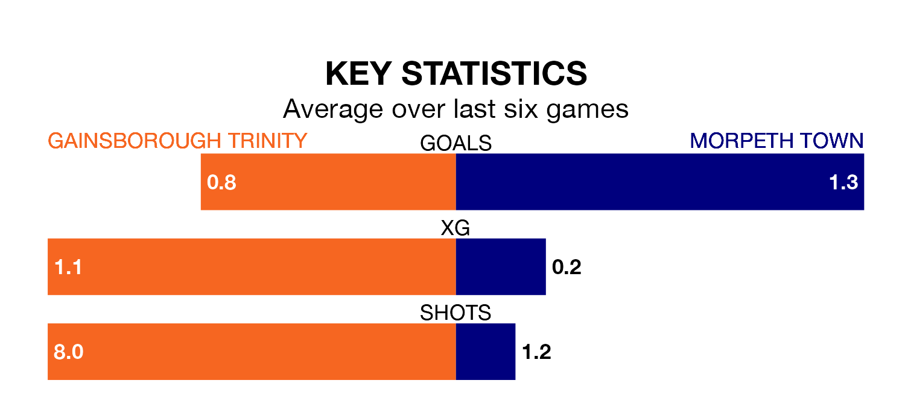

Gainsborough Trinity host Morpeth Town on Saturday at the Northolme in Northern Premier League.
In their last league match, on January 6, Gainsborough Trinity beat Guiseley 1-0 away.
Morpeth also won, 2-1 at home against Bradford Park Avenue.
With 33 goals in 25 games so far this season, Gainsborough Trinity are scoring at below the league average rate with 1.3 goals per game. And they are conceding more than average, letting in 47 goals at a rate of 1.9 per game.
Morpeth, meanwhile, are above average scorers, with 1.9 goals per game, compared to a league average of 1.6. They have conceded 1.8 goals per game.
The Blues are 17th in the table after 25 games, of which they have won eight and drawn five, earning 29 points.
Town are seven places ahead of the hosts in 10th, with 10 wins and seven draws putting them on 37 points.
Gainsborough Trinity are in disappointing form in Northern Premier League, with two wins and four losses from their last six games.
With three wins and two draws over that period, the away team's form is better – they have taken 11 points from 18, compared to Gainsborough Trinity's six.
Over the last two years, Gainsborough Trinity and Morpeth have played each other on three occasions. Morpeth won two of them and they drew once.
Their last meeting was on September 9, when Morpeth won 2-0 at home.
Updated: 13:38 (UTC), 10/01/24